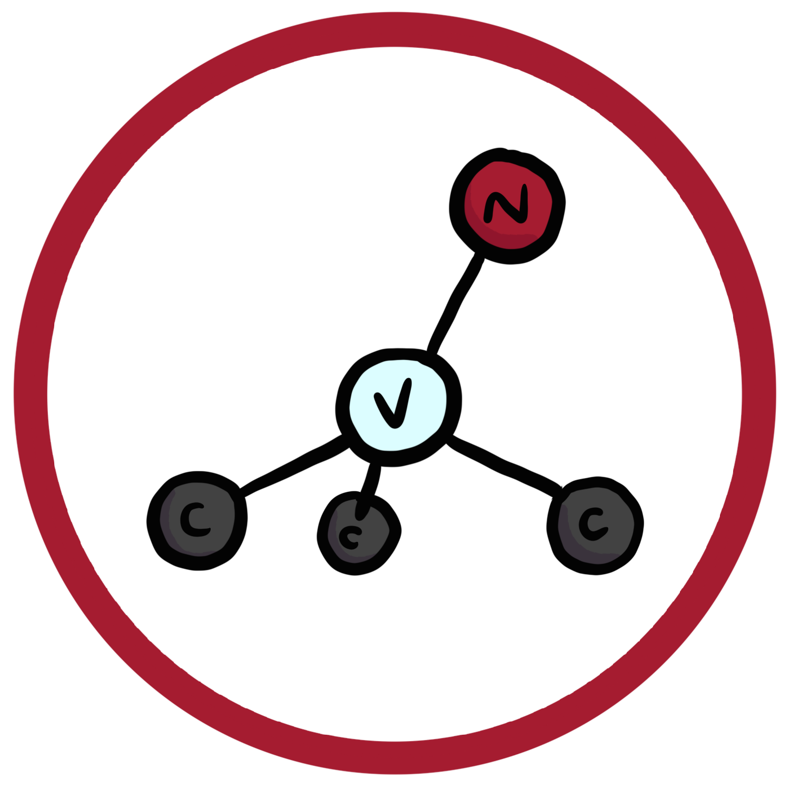
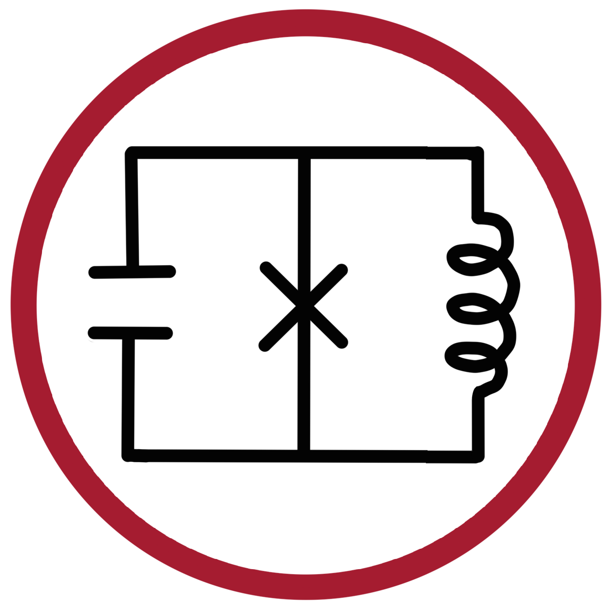
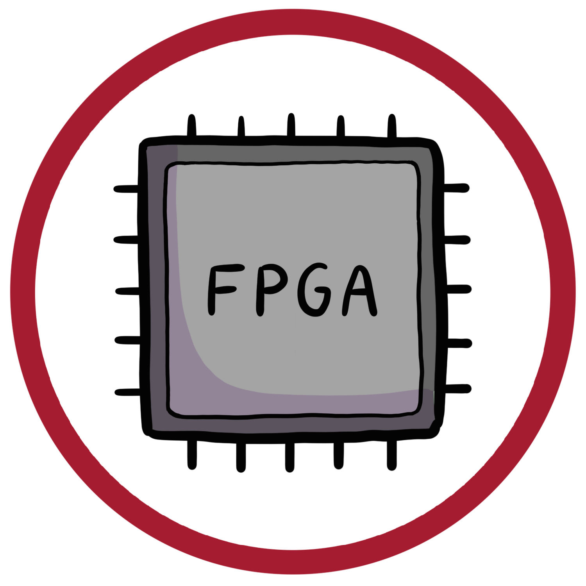

Elizabeth Medina
NSF GRFP Fellow | QSE PhD @ Harvard | Princeton ECE '24
Elizabeth is a PhD student in Harvard University's Quantum Science and Engineering (QSE) program, advised by Mikhail Lukin. Driven by a love for quantum and a fascination with biology, she is developing technologies that capitalize on quantum physics of nitrogen-vacancy (NV) centers to improve the way scientists study biological samples.
Research

Harvard University
| PI: Mikhail Lukin
March '26 - Present
March '26 - Present
Characterizing NV centers which will be used as quantum sensors in a nanoscale version of MRI, designed for biological sensing. Writing code that accounts for thermal fluctuations in the experimental setup, to stabilize NV qubit frequency and enable measurement protocols that provide more accurate sensing.
Harvard University
| PI: Hongkun Park
Sept '25 - March '26
Sept '25 - March '26
Research rotation for QSE program. Collaborated with a post-doctoral fellow to optimize an experimental setup for addressing NVs. Characterized NVs which will be used to probe the physics of two-dimensional materials.

Princeton University
| PI: Andrew Houck
Sept '23 - May '24
Sept '23 - May '24
Implemented a radio frequency switch to reduce noise from amplifiers on a qubit drive line, improving qubit single shot fidelity of a fluxonium qubit. Wrote code designed to auto-calibrate the output power of a radio frequency qubit controller.
Associated
presentations:
+
Argonne National Laboratory
| PI: Alexander Heifetz
March '23 - Aug '24
March '23 - Aug '24
Explored the feasibility of optomechanical and atomic vapor cell approaches to frequency conversion for quantum radar using COMSOL and Python, respectively. Contributed to a grant proposal for funding from the National Nuclear Security Administration's Defense Nuclear Nonproliferation Research and Development (NA-22) Office.
Associated
presentations:
+

Univerity of Chicago
| PI: David Awschalom
June '22 - Aug '22
June '22 - Aug '22
Evaluated the performance of an FPGA, firmware, and Python package which would be used to control solid-state qubits, such as NV and SiV centers in diamond. Set up the FPGA, navigated the package's custom Python functions and underlying assembly commands, and employed a spectrum analyzer and SCPI commands to determine the noise properties of the FPGA's signals. Created Jupyter notebooks for running Rabi and Ramsey experiments.
Associated
presentations:
+
Teaching and Outreach
- Jan '26 - Present: Quantum Engineering Research and You | Content Curator
- Dec '25 - Present: Harvard Quantum Initative Blog | Contributing Writer
- Jun '21 - Present: Inspirit AI | Middle School Coding Instructor
- Sept '23 - May '24: Princeton Students in Quantum | Social and Community Outreach Chair
- Oct '22, Nov '23: Society of Women Engineers High School Engineering Colloquium | Volunteer
- Sept '22 - Dec '22: ECE115, Introduction to Computing: Programming Autonomous Vehicles | Undergraduate Teaching Assistant
- May '21 - May '23: ECE Department | Student Ambassador
- Dec '20 - July '22: Matriculate | Advising Fellow
- Oct '20 - Oct '21: Princeton Women in Computer Science | Community Outreach Co-Chair